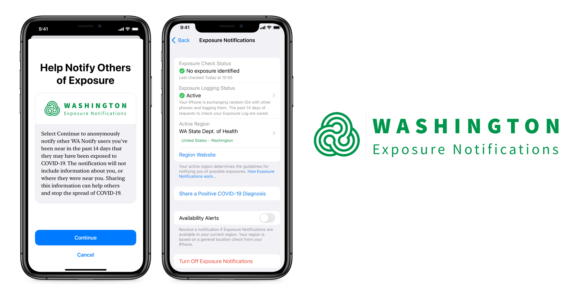
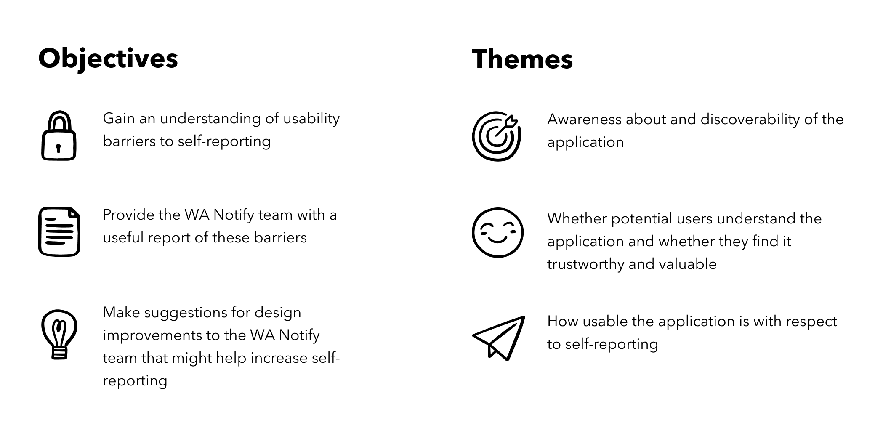
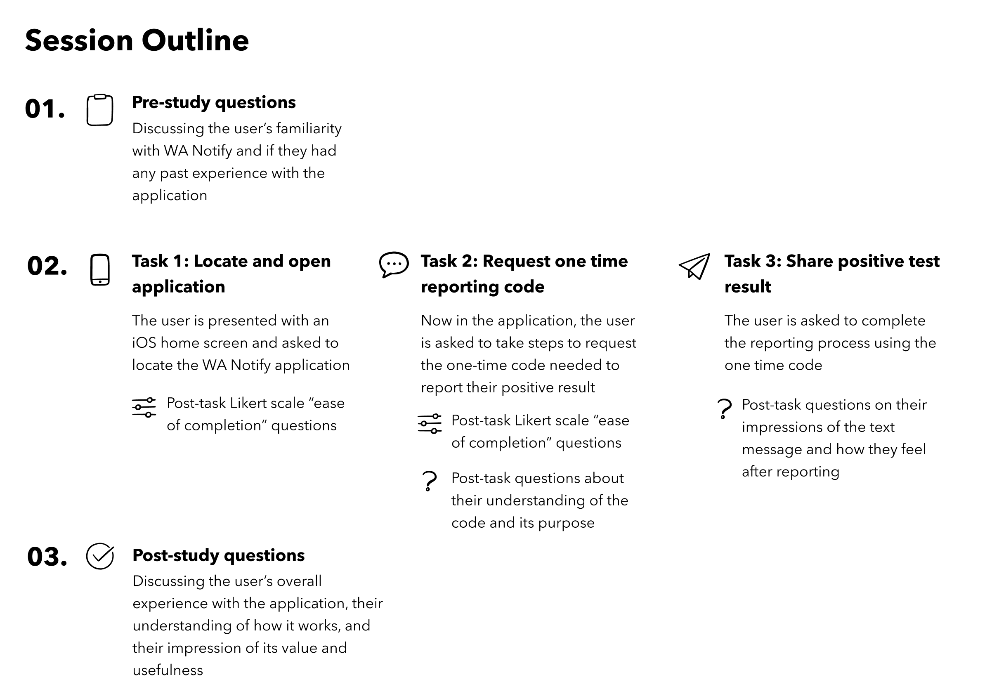
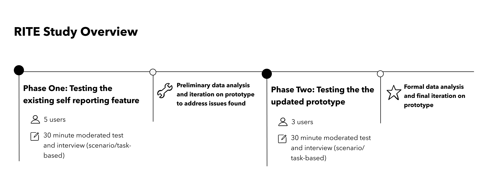
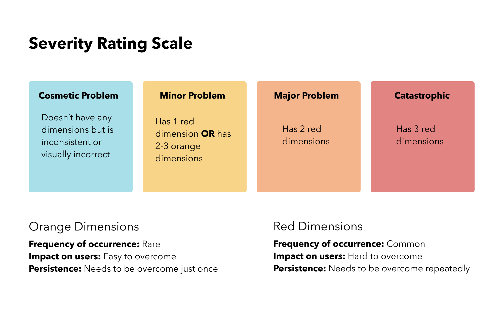
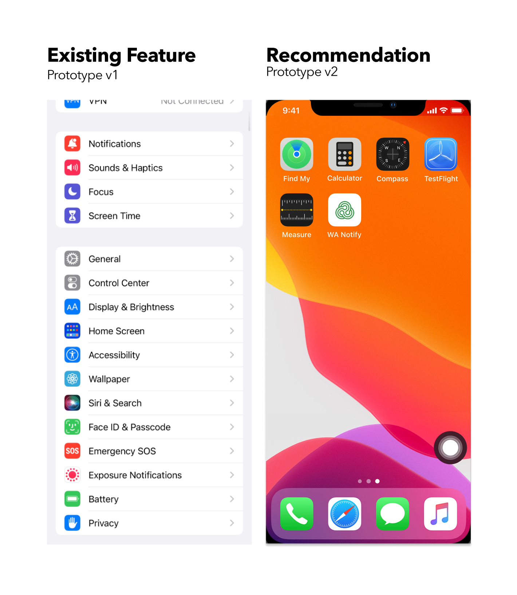
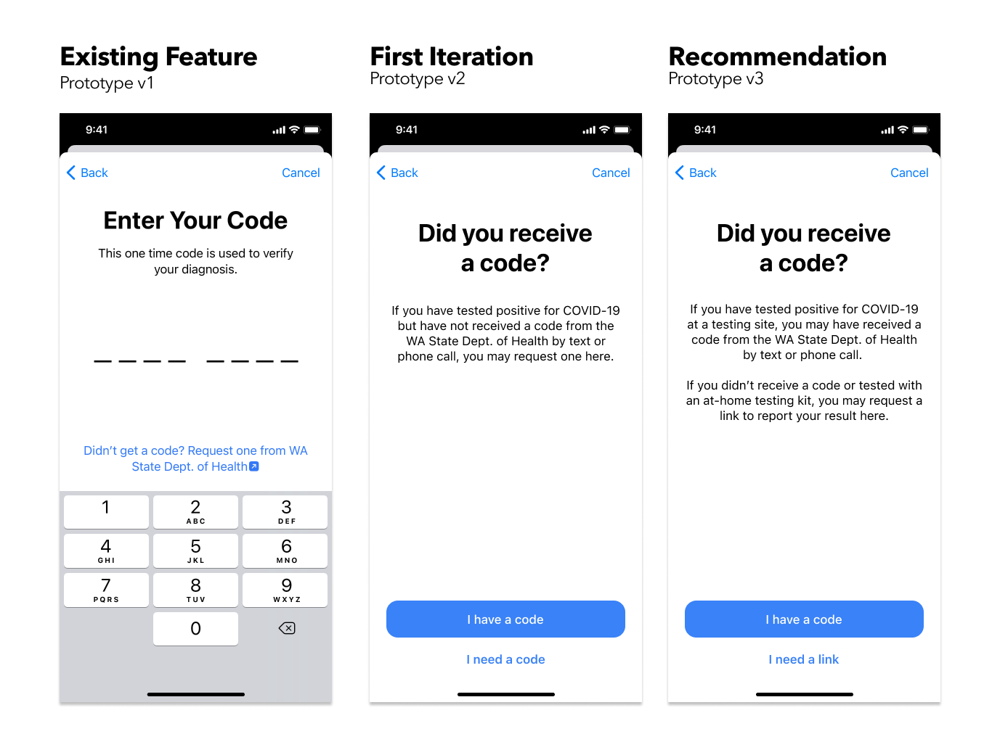
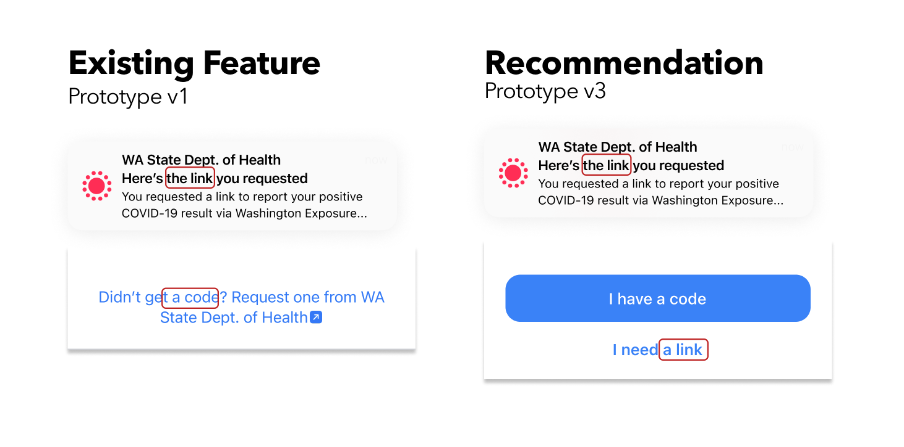
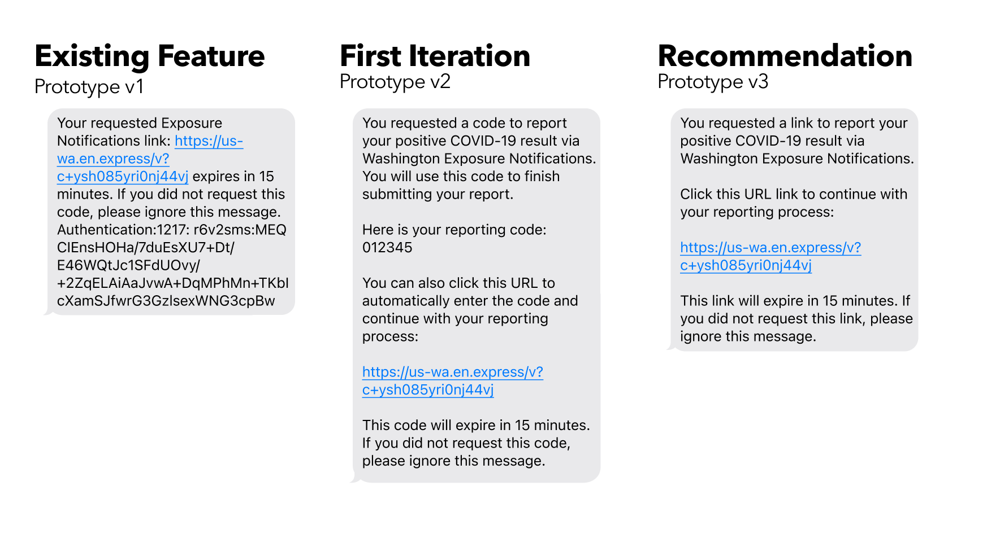

COVID Exposure Notifications
Understanding users’ experience with and impression of the WA Notify self reporting feature
Overview
Team: Charlsy Yang, Hailee Kenney, Nathan Ball
Project Timeline: 9 Weeks
Number of Participants: 8
Research Methods: Usability testing, RITE method, qualitative interviews
This study was conducted on behalf of the team behind WA Notify (also known as Washington Exposure Notifications), a mobile application that can anonymously inform users if they may have been exposed to COVID-19. The goal of this study was to explore the user experience of the newly-added “self-attestation” feature on iOS. Based on discussions with the WA Notify team, we wanted to focus on the usability of the feature, but also address how users felt about the application as a whole: whether they found it valuable to themselves and their communities, and whether they understood the inner workings enough to find it trustworthy.
To address these questions we designed and conducted a study which combined usability testing with qualitative interview questions, and employed the RITE (Rapid Iterative Testing and Evaluation) method, making and testing new prototypes based on test results. We ultimately found that while users are able to easily complete the task of reporting and have an overall positive view of the application, there were key opportunities to improve trust and clarity.
Using WA Notify
Users who receive a positive COVID-19 test result at a testing site will also receive a one-time reporting code with their result. Users can then use this code to report their positive result through the WA Notify application. This will alert any other active users of the application that the COVID-positive user has been near recently of a potential exposure.
At the time of this study, WA Notify had been recently updated to include a new “self-attestation” feature. This feature added the ability to also report a positive test result from an at-home test kit by requesting a one-time reporting code through the app. To use the “self-attestation” feature, a user would:
- Open the Exposure Notifications application from iOS settings
- Select that they want to share a positive diagnosis
- Fill out COVID test information and request a one-time reporting code
- Receive text message with one-time reporting code
- Follow URL from text message to return to the application
- Submit COVID test result
Objectives
After conducting an initial heuristic evaluation and meeting with the WA Notify team, we identified the following objectives and themes for the study:
We collaborated with the WA Notify team throughout the study to share progress updates, gather feedback and ensure we were working towards their desired goals. I served as our primary point of contact with the WA Notify team.
Methodology
Due to the nature of the data we were looking to collect, we chose to use a combination of usability testing and qualitative interview questions. Each session was around 30 minutes and took place via Zoom. The participants were given a hypothetical scenario where they had received a positive result from an at-home COVID test and were asked to report their result using an in-browser mockup of the iOS version of the WA Notify application. Although the application is available on both iOS and Android devices, we chose to focus on the iOS version due to time and team capacity, and the fact that our heuristic evaluation pointed to more potential barriers with the iOS version. Participants were asked to think out loud as they completed their tasks and were also asked pre-study and post-study questions (all of which I wrote), as well as post-task questions. I designed all the qualitative portions of the study, and served as a facilitator, note-taker, or both for all interviews. The format of each session consisted of the following:
We also chose to employ the RITE method for this study. While we used the same testing protocol every time, we conducted testing in phases with the existing feature and a modified prototype.
Participants
As WA Notify is intended to be used by anyone who resides in or is visiting Washington state, we chose not to define any requirements for participants, and did not collect demographic information in our recruitment screener. Instead we chose to explore whether there was a correlation between participants' impressions of WA Notify and their level of “COVID caution”. In order to rate each participant’s level of caution as “low”, “medium”, or “high”, we asked questions related to:
- Mask wearing habits
- Level of vaccination
- Level of COVID-related news consumption
- Change in daily habits due to COVID
We shared the screener with HCDE peers and our personal networks via social media to recruit participants - I handled all participant coordination, communication, and scheduling. Although we did identify a spectrum of levels of caution, we ultimately found no correlation between a participant's caution level and their impressions of WA Notify.
Findings and Recommendations
Data from each participant was organized into a table and analyzed based on the two phases of the study to identify common themes. I took the lead on organizing and synthesizing study data. Overall the application was perceived as usable and valuable by participants. All users saw potential value in the application because they felt it could serve themselves and their communities. Additionally, once they located the application all users were able to complete the reporting process, because the application UI is straightforward and easy to navigate. On a scale of 1 (very difficult) to 7 (very easy), 7 out of 8 participants rated filling out the form to request a code a 7.
Using a combination of qualitative interview data, observational notes, post-task questions and quantitative likert scale ratings, we identified several areas for improvement and recommendations. We rated each using the following severity scale.
Overall we identified 4 major problems and 3 minor problems. I wrote up detailed reports on several of our findings and recommendations. Highlighted here are the four issues we felt were most significant.
1. Nearly all users fail to find the iOS app because its location does not align with expectations
Users frequently struggle to locate the WA Notify application, which is buried within the Settings menu.
- All 5 participants new to WA Notify on iOS tried clicking something other than Settings first
- These 5 participants also mentioned that they wouldn’t expect it to be in Settings
“I guess I would go to the app store and download the app if I don’t have it” (P8)
“If there’s no app, maybe I have to go to the website” (P3)
Recommendation: Create a standalone WA Notify app for the phone home screen, similar to Android.
2. Most users are confused about the one-time reporting code due to lack of communication
There’s major user confusion around what the reporting code is and how they could have gotten it.
- 4 participants confused it with two-factor authentication
- 2 participants saw requesting code as a “backup plan”
“This wording is a little confusing… ‘didn’t get a code?’ like I should have?” (P2)
“Immediate thought was authentication code, in my head I thought maybe it sent me a text or email to verify I am who I say I am. It was interesting that to trigger the next step, I had to press ‘I didn’t get a code’ - at what point was I supposed to get one?” (P3)
“I thought this thing was like a backup plan if I didn’t receive the code.” (P1)
Recommendations: Give the two paths (“I already have a code” and “I need to request a code”) equal weight, and communicate clearly what the code is, as well as where and how they could have gotten it.

3. Several users were confused by the message notification because of inconsistent language
The use of “code” in the button contradicts the notification title, which says “link”. The form and content of the notification does not indicate that it is a text message.
- 3 participants tried to find a code in the text message until they failed to find one
- 2 participants expected tapping the notification will bring you directly to share your result
“My expectation was that I was going to go back to the screen where I entered the verification code… I wasn’t expecting this notification with a link. Why would I get a link? I asked for a code…” (P2)
“It’s confusing that it has the exposure notification icon…. I was expecting to get a text message” (P5)
Recommendations: Unify the language used and tightly connect words with previous actions and consequent actions.
4. Many users found the text message unreadable and untrustworthy because of the unstructured content
The message is unstructured, with a chunk of text that is hard to scan and digest. The authentication ID at the end causes distrust and suspicion.
4 participants expressed concern about the message for its unprofessional format
“This kind of feels like a spam message… especially if it comes from that number… the gibberish at the end of the text message feels like spam or like junk mail” (P1)
“I wouldn’t know that this link is used for the process, I probably wouldn’t read the text” (P3)
Recommendations: Divide the message into multiple paragraphs, remove the random ID if possible, and add more context to the message.
We provided our findings in the form of a presentation and a comprehensive report to the WA Notify team. The team reported that the findings were valuable, and provided them insights to improve how they communicate with the public about the application.
Reflection
Although this study is concluded, based on our experience there are a few things to consider if the study were to continue.
- Recruiting a more diverse participant pool. Due to time constraints we recruited from our personal networks, which heavily skewed our participant pool. Although there was some range in “COVID caution” across our participants, it was still only a small segment of the Washington state population (for example, all participants were vaccinated and masking indoors). A more representative sample may have produced different data, especially around impressions of value and trust in the application.
- Testing on Android. Due to team capacity and time we only tested the iOS version of the application. A more thorough review would involve also testing the Android application to provide a full analysis.